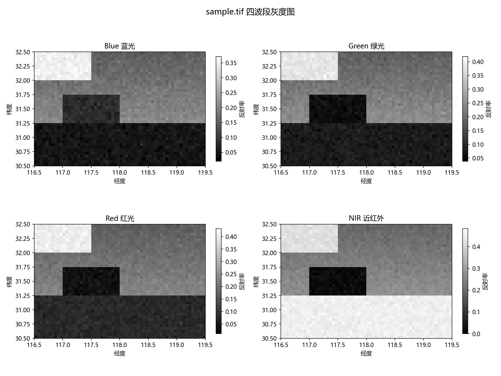

Week 1 — Python 基础 + NumPy + matplotlib
从零开始学 Python：变量、数据类型、列表字典、函数、文件读写。 然后进 NumPy 数组运算，最后用 matplotlib 画第一张 NDVI 图。
本周成果
- 01-06：Python 基础练习（变量、f-string、datetime、函数、文件读写）
- 07-08：NumPy 数组 + NDVI 计算
- 09-10：matplotlib 折线/散点/柱状/NDVI 热力图
NDVI 空间分布图
用 NumPy 算 NDVI，matplotlib 渲染。红色是水体（负值），绿色是植被（正值）。

Week 2 — pandas 表格数据处理
学 pandas 四块核心：表格入门、选择筛选、分组聚合、时间序列。 用 12 行站点观测表（3 站点 × 4 个月）做练手素材。
本周成果
- 11-12：DataFrame 入门 + CSV 读写
- 13-14：loc/iloc + 条件筛选
- 15-16：groupby/agg/sort_values
- 17-18：时间序列 + pandas 绘图
三站点 NDVI 月际变化
三条线 4-7 月全上升，合肥-01 整条最低，宣城-01 最高。

Week 3 — GeoPandas 空间数据（矢量）
GeoDataFrame = DataFrame + 几何列。学了几何操作、重投影、空间查询、 shapefile I/O，最后出了一张行政区 NDVI 分级综合图。
本周成果
- 19-20：GeoDataFrame 入门 + 站点地图
- 21-22：buffer/area/distance + 重投影 3857
- 23-24：intersects/within + sjoin 空间连接
- 25-26：shapefile 5 件套 + 综合出图
行政区 NDVI 分级 + 站点缓冲区
合肥区偏红（NDVI 0.49）、宣城区偏绿（0.58），三站点带 5km 缓冲圈。

Week 4 — rasterio 遥感影像（栅格）
学栅格数据：读 tif、认识 transform/CRS、重投影、窗口读取、 矢栅联动（mask 裁栅格 + 站点像元提取），最后串成完整 NDVI 分区统计流程。
本周成果
- gen + 27-28：造教学影像 + rasterio 读 tif + 四波段出图
- 29-30：重投影 4326→UTM + 窗口读取
- 31-32：mask 裁栅格 + 站点像元提取
- 33：学期项目收口（完整流程）
四波段灰度图
NIR 波段植被区最亮、水体最暗——近红外是区分植被水体的最佳波段。

Week 5 — 前端 HTML/CSS
学前端三件套的第一件：HTML。用标签描述页面结构， 做了一个 GIS 学习记录页面（就是你正在看的这个）。
本周成果
- 01：HTML 基础 — 文档结构、常用标签、语义化标签
- 02：CSS 基础（待做）
- 03：布局 flexbox/grid（待做）
- 04：作品集页面（待做）